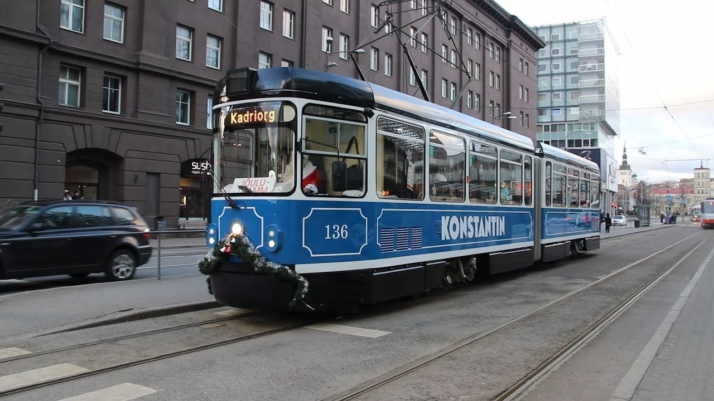

Descripción
Siguiendo la tradición, el mercadillo navideño de Tallín abrirá sus casetas este año para brindarnos el placer de disfrutar de unas navidades típicas de un cuento de hadas. En Raekoja Plats, la Plaza del Ayuntamiento,se alza un grandioso abeto, el símbolo de la Navidad.Y nuestra ciudad tiene el orgullo de ser el primer lugar del mundo en el que se levantó un árbol de Navidad:en 1441, ¡ni más ni menos!

En los últimos años, el mercadillo en su conjunto con los preciosos edificios medievales de Raekoja Plats, se ha convertido en un símbolo navideño y turístico, no sólo ya de Estonia, sino de toda Europa, siendo calificado como uno de los mejores mercadillos navideños del continente y del mundo, recibiendo cada año casi un millón de visitantes desde todas partes del globo.Los niños tendrán diversión asegurada gracias a Santa Claus, quien en su casita de madera da caramelos a los niños que mejor recitan versos (cantar y recitar versos o poemas es una tradición de nuestro país compartida con nuestros vecinos bálticos letones y lituanos). En las diversas casetas podrás comprar desde productos artesanales de alta calidad hasta accesorios para inverno como guantes o bufandas. Y cuando estés un poco harto de observar los puestos y notes que tu estómago ruge furioso, puedes saciar tu apetito con algún dulce de jengibre o degustar deliciosos platos asados estonios. También puedes probar el vino caliente, una bebida típica de los países bálticos, Escandinavia y Rusia. O el internacional chocolate caliente, que siempre sienta muy bien. El espíritu navideño está presente, y reforzado por un programa cultural especial. Los fines de semana, diferentes grupos de música de Estonia y del extranjero tocarán en el escenario del mercadillo, y cada domingo durante el periodo de Adviento se encenderá una vela, al mismo tiempo que los pastores de las iglesias luteranas estonia y rusa, y el alcalde de la ciudad darán discursos de bienvenida a la gente en la plaza.¡Y se dará la bienvenida al 2019 con un programa aún más especial!
El Mercadillo Navideño de Tallín acoge con los brazos abiertos a todo el mundo. Feliz Navidad.
Calendario
El mercadillo abre sus puertas desde el 16 de noviembre hasta el 7 de enero todos los días desde las 10:00 hasta las 20:00. Las bebidas calientes (vino caliente) podrán disfrutarse de domingo a jueves hasta las 22:00, y los viernes y sábados hasta las 23:00. Programa especial de Navidad: Viernes de 17:00 a 19:00, Sábados y Domingos de 12:00 a 14:00.Desde el 2 de diciembre Santa Claus da la bienvenida a los niños de lunes a domingo desde las 12:00 hasta las 19:00.


Participantes
Cada fin de semana participarán diferentes grupos folk de nuestro país y del extranjero, dispuestos a brindarnos un animado espectáculo.Los participantes son los siguientes:
Viernes 16 de Noviembre:Viisuveeretajad (Estonia), Carolina (Estados Unidos)
Sábado 17 de Noviembre:Black and White (Irlanda), Mariliis Jögeva (Estonia) Solas (Irlanda), Tantsusarvikud (Estonia)
Domingo 18 de Noviembre:Pühalepa (Estonia), Escuela de danza RAPTI (Grecia)
Viernes 23 de Noviembre:Leesikad (Estonia)
Sábado 24 de Noviembre:Juhukse (Estonia), Zahira (Estonia)
Domingo 25 de Noviembre:Cantitores (Finlandia), Kirmas (Estonia)
Viernes 30 de Noviembre:Nömme (Estonia), Söleke (Estonia), Free Flow Studio (Estonia)
 Sábado 1 de Diciembre:Moroshka (Rusia), Tammed ja Toomed (Estonia), Harku Harakad (Estonia)
Sábado 1 de Diciembre:Moroshka (Rusia), Tammed ja Toomed (Estonia), Harku Harakad (Estonia)
Domingo 2 de Diciembre:Kopli (Estonia), Coros de las congregaciones luteranas de Tallín.
Viernes 7 de Diciembre:Vöör ja Ahter (Estonia), Escuela de danza RAPTI (Grecia)
Sábado 8 de Diciembre:Kuu (Estonia), Panter (Estonia), KT Stuudio (Estonia)
Domingo 9 de Diciembre:Ellerhein (Estonia), Ingliskad (Estonia)
Viernes 14 de Diciembre:Köku (Estonia), VAT Stuudio (Estonia)
Sábado 15 de Diciembre:Tuisuline (Estonia), Happy Feet (Nueva Zelanda), Jürid-Maarid (Estonia)
Domingo 16 de Diciembre:Siki (Estonia), MYDANCE (Suecia)
Viernes 21 de Diciembre:Desiree (Estonia)
Sábado 22 de Diciembre:Kolgaküla Laneerid (Estonia), Free Flow Studio (Estonia)
Domingo 23 de Diciembre:Löoke (Estonia), Modus (Alemania)
Viernes 28 de Diciembre:LTF (Estados Unidos), Alhambra (Estados Unidos), Asmarah (Estonia), Valeria Nikolajeva (Rusia)
Sábado 29 de Diciembre:Beatrice Nebis (Estonia), Aler (Georgia)
Domingo 30 de Diciembre:Modus (Alemania), Lili Adeni (Estonia)
Lunes 31 de Diciembre:Programa especial de Año Nuevo, Nömme Huvikooli (Estonia)
Viernes 4 de Enero:Terek (Rusia), Jagody (Polonia), Sakala Laululapsed (Estonia)
Sábado 5 de Enero:Pääsuke (Estonia), Kodu (Estonia), Leigarid (Estonia)
Domingo 6 de Enero:Koit (Estonia), Juri Zaljubovski (Rusia), Mustad Kassi (Estonia).Clausura del Mercadillo
Lugar
Raekoja Plats está en el corazón del centro histórico de Tallín. Para aquellos turistas que se hayan alojado fuera del centro o residentes en la periferia, las paradas de autobús urbano y tranvía están sólo a 5 minutos caminando. La línea 4 de tranvía conecta de forma directa Raekoja Plats con el aeropuerto.
 Parada de autobús más próxima: Viru (líneas 21,21B,40,41,48,73)
Parada de autobús más próxima: Viru (líneas 21,21B,40,41,48,73)
 Parada de tranvía más próxima: Viru (líneas 3 y 4)
Parada de tranvía más próxima: Viru (líneas 3 y 4)
